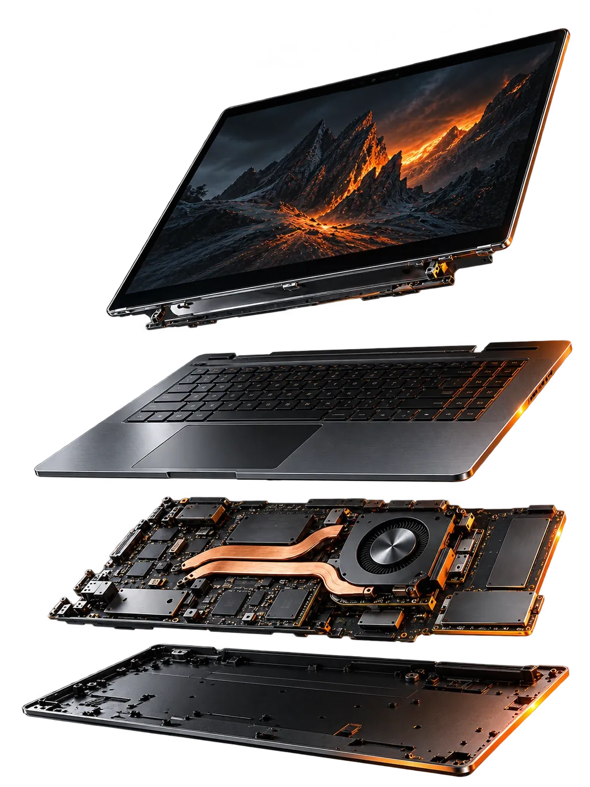

Opravy PC
a notebookov
Hardvér / DiagnostikaNefunkčný displej, poškodený konektor či počítač, ktorý nereaguje. Nájdeme príčinu a navrhneme zmysluplný postup opravy.
Cena po diagnostikeServis počítačov a notebookov / Bratislava
Opravy, ktoré vrátia techniku do života.

Služby / Technika má ďalší život
Od nepríjemnej drobnosti po počítač, ktorý sa už ani nezapne. Začnime tým, čo vás trápi.
Nefunkčný displej, poškodený konektor či počítač, ktorý nereaguje. Nájdeme príčinu a navrhneme zmysluplný postup opravy.
Cena po diagnostikePomalé štarty a nekonečné načítavanie nemusia znamenať nový počítač. Pozrieme sa na úložisko, pamäť aj nastavenie systému.
Cena po diagnostikeHlučný ventilátor, horúca klávesnica alebo samovoľné vypínanie. Skontrolujeme chladenie, odstránime prach a ošetríme tepelný prenos.
Cena po diagnostikeDôležité súbory, presun na nový disk alebo problémy so systémom. Posúdime možnosti zálohy a obnovy podľa stavu zariadenia.
Cena po diagnostikeRozsah práce aj prípadné náhradné diely závisia od konkrétnej poruchy. Cenu a postup si dohodneme pred opravou.
Pomôžeme vám začať
Nepotrebujete poznať odborný názov poruchy. Vyberte, čo najviac vystihuje váš problém.
Nereaguje na zapnutie, zostáva čierna obrazovka alebo sa po chvíli vypne? Popíšte, čo sa stalo tesne pred poruchou.
Odporúčaný začiatok: diagnostika napájania a hardvéru.
Opísať tento problémPostup / Viete, čo sa deje
Jasné kroky od prvého kontaktu až po odovzdanie zariadenia.
Začnime prvým krokomNapíšete typ zariadenia a príznaky poruchy. Dohodneme si spôsob odovzdania a ďalší postup.
Diagnostika ukáže, kde je problém a aké riešenia prichádzajú do úvahy. Vysvetlíme vám ich zrozumiteľne.
Pred opravou poznáte navrhovaný rozsah, cenu aj predpokladaný termín. Rozhodnete sa na základe konkrétnych informácií.
Po zásahu preveríme funkčnosť zariadenia a pri odovzdaní vysvetlíme, čo sme urobili a na čo si dať pozor.
Dobré vedieť
Nenašli ste svoju odpoveď? Napíšte nám ju spolu s požiadavkou.
Závisí to od príčiny poruchy, rozsahu práce a potrebných dielov. Konkrétnu cenu navrhneme po posúdení zariadenia. Pred odovzdaním si dohodneme aj podmienky a prípadnú cenu diagnostiky.
Termín závisí od typu opravy a dostupnosti náhradných dielov. Predpokladaný čas vám oznámime po posúdení problému. Ak zariadenie potrebujete na konkrétny deň, uveďte to v požiadavke.
Niekedy výrazne pomôže výmena disku, doplnenie pamäte alebo vyčistenie. Pri rozhodovaní má zmysel porovnať cenu zásahu, stav zariadenia a to, na čo počítač používate. Možnosti spolu prejdeme.
Označenie modelu, stručný opis problému a podľa dohody aj nabíjačku. Ak je to možné, zálohujte dôležité súbory. Heslá ani citlivé dokumenty neposielajte cez kontaktný formulár.
Možnosti závisia od typu poškodenia a stavu úložiska. Úspešnú obnovu nemožno sľúbiť bez posúdenia. Ak máte podozrenie na stratu dát, zariadenie ďalej zbytočne nepoužívajte a najprv sa poraďte.
Kontakt / Prvý krok je na vás
Napíšte nám, čo nefunguje.
Odtiaľ sa už pohneme spolu.